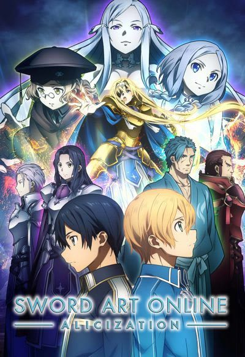
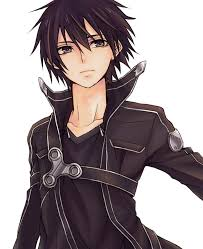
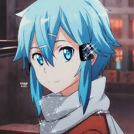
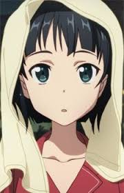

Sword Art Online
Released: July 8, 2012
Genre: Action, Fantasy, Sci-Fi, Romance, Adventure
Sword Art Online centers on Kirito and thousands of players trapped in a VR MMORPG. If they die in-game, they die in real life. To escape, they must clear all 100 levels of Aincrad.
With gripping fights, digital worlds, and emotional arcs, SAO became a global hit that helped define modern isekai anime.
Cast

Kirito
Voice: Yoshitsugu Matsuoka
Asuna
Voice: Haruka Tomatsu

Sinon
Voice: Miyuki Sawashiro

Leafa
Voice: Ayana Taketatsu